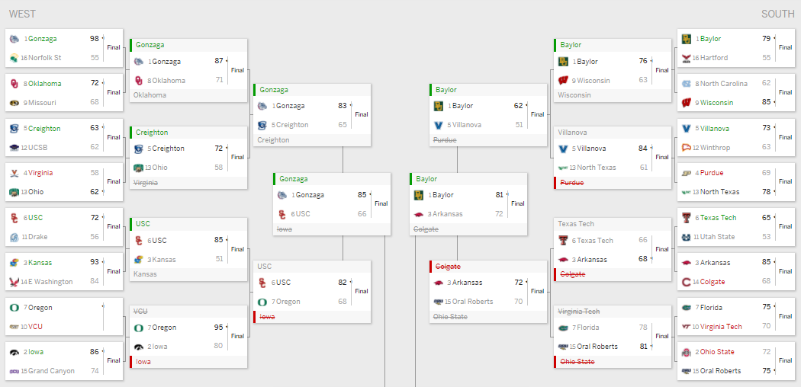

Background
We all look to win that lucrative $1 million dollars for that perfect bracket, but we resort to methods of picking the color mascot, flipping a coin, or now the new favorite - letting the site randomly finish your bracket for you. Based on probability, you have a 1 in over 9 quintillion - that’s 18 zeros. With a little bit of basketball knowledge and history of the tournament, you can probably bring down those odds to 1 in about 100 billion, so your dreams of that million dollars should stay dreams.
Now me being a math nerd and very optimistic of my own abilities (even though 75% of college basketball I watched this year was Nebraska), I utilized a new method to create my brackets this year - machine learning. The model I built uses decide a simple W or L designation.
Features of the Model
The data is from 2015 through the conference championships of 2021, giving us plenty of data to work with. The higher the accuracy of the model, the better results. Three variables used for the prediction are each team’s respective pace, offensive rating, and defensive rating. When these three stats are known - which is only possible after the game - we could correctly predict the results and score nearly 100% of the time.
The reasoning behind using rolling mean - selecting the average of the last k games - instead of cumulative mean - taking the average of all the games - is based solely on accuracy. I decided upon k=10 because the model, when applied to March Madness, was too unstable when k was less than 10, despite including the Win Quality variable. FOr example, when k was anywhere between 2 to 5, the model would predict a lot of upsets from high seeded, non-Power5 teams, which typically wouldn’t occur.
Additionally, I included a final variable calculating Win Quality of the teams. limited the Win Quality variable to the last 15 games, looking to only include conference play and when most teams were settled into the season - hopefully looking to remove most COVID breaks and/or teams had developed their identity. It has been a weird year for college hoops, and the results below definitely show it!
games <- read_csv("data/cbblogs1521.csv") %>% mutate(
Possessions = .5*(TeamFGA - TeamOffRebounds + TeamTurnovers + (.475 * TeamFTA)) + .5*(OpponentFGA - OpponentOffRebounds + OpponentTurnovers + (.475 * OpponentFTA)),
OffensiveRating = (TeamScore/Possessions)*100,
DefensiveRating = (OpponentScore/Possessions)*100,
ScoreDifference = TeamScore - OpponentScore,
WinQuality = case_when(is.na(OpponentSRS) == TRUE ~ ScoreDifference, TRUE ~ ScoreDifference + OpponentSRS)
) %>%
group_by(Team, Season) %>%
mutate(
RollingPace = rollmean(Possessions, k=10, fill=Possessions),
RollingMeanOffRating = rollmean(OffensiveRating, k=10, fill= OffensiveRating),
RollingMeanDefRating = rollmean(DefensiveRating, k=10, fill= DefensiveRating),
CumulativeWinQuality = cummean(WinQuality)
) %>% filter(between(Game, max(Game)-15, max(Game))) %>% ungroup() %>%
mutate(
Location = case_when(
str_trim(HomeAway) == "@" ~ "A",
str_trim(HomeAway) == "N" ~ "N",
TRUE ~ "H"
),
Outcome = case_when(
grepl("W", W_L) ~ "W",
grepl("L", W_L) ~ "L"
)
) %>%
mutate(Outcome = as.factor(Outcome))##
## -- Column specification --------------------------------------------------------
## cols(
## .default = col_double(),
## Season = col_character(),
## Date = col_date(format = ""),
## TeamFull = col_character(),
## Opponent = col_character(),
## HomeAway = col_character(),
## W_L = col_character(),
## URL = col_character(),
## Conference = col_character(),
## Team = col_character()
## )
## i Use `spec()` for the full column specifications.This model only gets about 70% of the games right. In other words, basketball is a very random game with a lot of variability, so despite knowing exactly what you need to get to the final score, results are still very difficult to predict.
metrics(testpredict, Outcome, .pred_class)## # A tibble: 2 x 3
## .metric .estimator .estimate
## <chr> <chr> <dbl>
## 1 accuracy binary 0.692
## 2 kap binary 0.384***Final disclaimer, the model doesn’t adjust for teams with recently diminished rosters - I’m looking at you Michigan, Villanova, and Kansas - but will slightly realize these changes through their worst performances from the last few games.
Bracket
To save you some time, we’re going to hop right into the Elite 8 and summarize how the teams got there. For the West, we see Gonzaga stays undefeated after victories over Norfolk State, Missouri, and Virginia. Iowa defeats Grand Canyon, VCU, and USC on it’s way to Gonzaga, unfortunately losing to the juggernaut of Gonzaga. No upsets were predicted in this model.
west8 <- tibble(
Team="Gonzaga",
Opponent="Iowa",
Date = as.Date("2021-03-19")
)
westgames8 <- selectedgames %>% group_by(Team) %>% filter(Date == max(Date), Season == "2020-2021") %>% select(-Date, -Opponent, -Outcome) %>% right_join(west8)## Joining, by = "Team"westgames8 <- opponentgames %>% group_by(Opponent) %>% filter(Date == max(Date)) %>% ungroup() %>% select(-Season, -Date, -Outcome) %>% right_join(westgames8, by=c("Opponent")) %>% select(Team, everything())
westregional8 <- log_fit %>% predict(new_data = westgames8) %>%
bind_cols(westgames8)
log_fit %>% predict(new_data = westregional8, type="prob") %>%
bind_cols(westregional8)## # A tibble: 1 x 19
## .pred_L .pred_W .pred_class Team Opponent OpponentScore OpponentRollingPace
## <dbl> <dbl> <fct> <chr> <chr> <dbl> <dbl>
## 1 0.408 0.592 W Gonzaga Iowa 71 85.2
## # ... with 12 more variables: OpponentSRS <dbl>,
## # OpponentRollingMeanOffRating <dbl>, OpponentRollingMeanDefRating <dbl>,
## # OpponentCumulativeWinQuality <dbl>, Season <chr>, TeamScore <dbl>,
## # RollingPace <dbl>, TeamSRS <dbl>, RollingMeanOffRating <dbl>,
## # RollingMeanDefRating <dbl>, CumulativeWinQuality <dbl>, Date <date>We move to the East where we see the No. 1 Michigan Wolverines face and defeat the No. 2 Alabama Crimson Tide. Alabama beats Iona, Maryland, and Texas along the way but can’t quite get past the Wolverines, who beats Mount Saint Mary’s - winner of the playin game - LSU and Colorado. Maryland beating UConn is the biggest upset for the East region.
east8 <- tibble(
Team="Michigan",
Opponent="Alabama",
Date = as.Date("2021-03-19")
)
eastgames8 <- selectedgames %>% group_by(Team) %>% filter(Date == max(Date), Season == "2020-2021") %>% select(-Date, -Opponent, -Outcome) %>% right_join(east8)## Joining, by = "Team"eastgames8 <- opponentgames %>% group_by(Opponent) %>% filter(Date == max(Date)) %>% ungroup() %>% select(-Season, -Date, -Outcome) %>% right_join(eastgames8, by=c("Opponent")) %>% select(Team, everything())
eastregional8 <- log_fit %>% predict(new_data = eastgames8) %>%
bind_cols(eastgames8)
log_fit %>% predict(new_data = eastregional8, type="prob") %>%
bind_cols(eastregional8)## # A tibble: 1 x 19
## .pred_L .pred_W .pred_class Team Opponent OpponentScore OpponentRollingPa~
## <dbl> <dbl> <fct> <chr> <chr> <dbl> <dbl>
## 1 0.488 0.512 W Michigan Alabama 80 75.0
## # ... with 12 more variables: OpponentSRS <dbl>,
## # OpponentRollingMeanOffRating <dbl>, OpponentRollingMeanDefRating <dbl>,
## # OpponentCumulativeWinQuality <dbl>, Season <chr>, TeamScore <dbl>,
## # RollingPace <dbl>, TeamSRS <dbl>, RollingMeanOffRating <dbl>,
## # RollingMeanDefRating <dbl>, CumulativeWinQuality <dbl>, Date <date>Moving to the South, the model breaks it’s nearly cookie cutter mold. We see Baylor roll through Wisconsin and Purdue on its way to a matchup with Colgate. The anticipated Cinderalla - the gambling action for the first round will also agree - for this year is Colgate, beating Arkansas, Texas Tech, and Ohio State to end their run to a lose against Baylor. Virginia Tech beats Florida first round, but the story out South are the Raiders from New York.
south8 <- tibble(
Team="Baylor",
Opponent="Colgate",
Date = as.Date("2021-03-19")
)
southgames8 <- selectedgames %>% group_by(Team) %>% filter(Date == max(Date), Season == "2020-2021") %>% select(-Date, -Opponent, -Outcome) %>% right_join(south8)## Joining, by = "Team"southgames8 <- opponentgames %>% group_by(Opponent) %>% filter(Date == max(Date)) %>% ungroup() %>% select(-Season, -Date, -Outcome) %>% right_join(southgames8, by=c("Opponent")) %>% select(Team, everything())
southregional8 <- log_fit %>% predict(new_data = southgames8) %>%
bind_cols(southgames8)
log_fit %>% predict(new_data = southregional8, type="prob") %>%
bind_cols(southregional8)## # A tibble: 1 x 19
## .pred_L .pred_W .pred_class Team Opponent OpponentScore OpponentRollingPace
## <dbl> <dbl> <fct> <chr> <chr> <dbl> <dbl>
## 1 0.391 0.609 W Baylor Colgate 85 73.2
## # ... with 12 more variables: OpponentSRS <dbl>,
## # OpponentRollingMeanOffRating <dbl>, OpponentRollingMeanDefRating <dbl>,
## # OpponentCumulativeWinQuality <dbl>, Season <chr>, TeamScore <dbl>,
## # RollingPace <dbl>, TeamSRS <dbl>, RollingMeanOffRating <dbl>,
## # RollingMeanDefRating <dbl>, CumulativeWinQuality <dbl>, Date <date>In the Midwest, we return to cookie cutter fashion with an Elite 8 of No. 1 an No. 2 - and you guessed it, Illinois advances to the Final Four. Houston routs Cleveland State, Clemson, and San Diego State on their run but Illinois comes in with a full head of steam after defeating Drexel, Loyola Chicago, and Oklahoma State. The surprise here, San Diego State makes it to the Sweet 16.
midwest8 <- tibble(
Team="Houston",
Opponent="Illinois",
Date = as.Date("2021-03-19")
)
midwestgames8 <- selectedgames %>% group_by(Team) %>% filter(Date == max(Date), Season == "2020-2021") %>% select(-Date, -Opponent, -Outcome) %>% right_join(midwest8)## Joining, by = "Team"midwestgames8 <- opponentgames %>% group_by(Opponent) %>% filter(Date == max(Date)) %>% ungroup() %>% select(-Season, -Date, -Outcome) %>% right_join(midwestgames8, by=c("Opponent")) %>% select(Team, everything())
midwestregional8 <- log_fit %>% predict(new_data = midwestgames8) %>%
bind_cols(midwestgames8)
log_fit %>% predict(new_data = midwestregional8, type="prob") %>%
bind_cols(midwestregional8)## # A tibble: 1 x 19
## .pred_L .pred_W .pred_class Team Opponent OpponentScore OpponentRollingPace
## <dbl> <dbl> <fct> <chr> <chr> <dbl> <dbl>
## 1 0.735 0.265 L Houston Illinois 91 73.3
## # ... with 12 more variables: OpponentSRS <dbl>,
## # OpponentRollingMeanOffRating <dbl>, OpponentRollingMeanDefRating <dbl>,
## # OpponentCumulativeWinQuality <dbl>, Season <chr>, TeamScore <dbl>,
## # RollingPace <dbl>, TeamSRS <dbl>, RollingMeanOffRating <dbl>,
## # RollingMeanDefRating <dbl>, CumulativeWinQuality <dbl>, Date <date>The Final Four
The model sure likes the favorites. Despite no Livers, Michigan still wins their region but will come up short to Gonzaga. But don’t you worry you B1G fans, Illinois has got your back. The model predicts the Illini to win handily over the Baylor Bears, giving them a shot at not only being the best in their conference but also ruining Gonzaga’s perfect season.
finalfour <- tibble(
Team="Baylor",
Opponent="Illinois",
Date = as.Date("2021-03-19")
) %>% add_row(
Team="Gonzaga",
Opponent="Michigan",
Date = as.Date("2021-03-19")
)
finalfourgames <- selectedgames %>% group_by(Team) %>% filter(Date == max(Date), Season == "2020-2021") %>% select(-Date, -Opponent, -Outcome) %>% right_join(finalfour)## Joining, by = "Team"finalfourgames <- opponentgames %>% group_by(Opponent) %>% filter(Date == max(Date)) %>% ungroup() %>% select(-Season, -Date, -Outcome) %>% right_join(finalfourgames, by=c("Opponent")) %>% select(Team, everything())
finalfourresults <- log_fit %>% predict(new_data = finalfourgames) %>%
bind_cols(finalfourgames)
log_fit %>% predict(new_data = finalfourresults, type="prob") %>%
bind_cols(finalfourresults)## # A tibble: 2 x 19
## .pred_L .pred_W .pred_class Team Opponent OpponentScore OpponentRollingPace
## <dbl> <dbl> <fct> <chr> <chr> <dbl> <dbl>
## 1 0.692 0.308 L Baylor Illinois 91 73.3
## 2 0.410 0.590 W Gonzaga Michigan 67 72.8
## # ... with 12 more variables: OpponentSRS <dbl>,
## # OpponentRollingMeanOffRating <dbl>, OpponentRollingMeanDefRating <dbl>,
## # OpponentCumulativeWinQuality <dbl>, Season <chr>, TeamScore <dbl>,
## # RollingPace <dbl>, TeamSRS <dbl>, RollingMeanOffRating <dbl>,
## # RollingMeanDefRating <dbl>, CumulativeWinQuality <dbl>, Date <date>Championship
Two Preseason Top 10 teams reach the finals, and Gonzaga looks to end with a historical season. They’re looking to join 7 other undefeated national champions and to be the first since 1976.
championship <- tibble(
Team="Illinois",
Opponent="Gonzaga",
Date = as.Date("2021-03-19")
)
championshipgames <- selectedgames %>% group_by(Team) %>% filter(Date == max(Date), Season == "2020-2021") %>% select(-Date, -Opponent, -Outcome) %>% right_join(championship)## Joining, by = "Team"championshipgames <- opponentgames %>% group_by(Opponent) %>% filter(Date == max(Date)) %>% ungroup() %>% select(-Season, -Date, -Outcome) %>% right_join(championshipgames, by=c("Opponent")) %>% select(Team, everything())
championshipresults <- log_fit %>% predict(new_data = championshipgames) %>%
bind_cols(championshipgames)
log_fit %>% predict(new_data = championshipresults, type="prob") %>%
bind_cols(championshipresults)## # A tibble: 1 x 19
## .pred_L .pred_W .pred_class Team Opponent OpponentScore OpponentRollingPa~
## <dbl> <dbl> <fct> <chr> <chr> <dbl> <dbl>
## 1 0.571 0.429 L Illinois Gonzaga 88 83.8
## # ... with 12 more variables: OpponentSRS <dbl>,
## # OpponentRollingMeanOffRating <dbl>, OpponentRollingMeanDefRating <dbl>,
## # OpponentCumulativeWinQuality <dbl>, Season <chr>, TeamScore <dbl>,
## # RollingPace <dbl>, TeamSRS <dbl>, RollingMeanOffRating <dbl>,
## # RollingMeanDefRating <dbl>, CumulativeWinQuality <dbl>, Date <date>Once again, the model likes to pick a favorite, this time in historic nature. It’s been hard to bet against the Bulldogs this year, and the numbers even show it. I’ll be honest, the bracket paints a pretty picture for most high seeds, but as we’ve all seen before, this bracket is likely to get busted. With all the struggles and craziness of the 2020-2021 season already, I doubt this year’s bracket will go as expected.
Extra: Bracket Tiebreaker
In the event that this bracket miraculously does well, I spent a little time using some data to come to a championship score prediction. I simply looked at the pace and ratings of both Gonzaga and Illinois and like everyone else, took an educated guess (this time using some data to back it up).
Gonzaga <- bothsides2 %>% filter(Team == "Gonzaga", Season == "2020-2021") %>% group_by(Team, Season) %>% mutate(
CumMeanTeamScore = cummean(TeamScore),
CumMeanOppScore = cummean(OpponentScore)
) %>% ungroup() %>%
select(Team,CumMeanTeamScore, CumMeanOppScore, RollingPace, RollingMeanOffRating, RollingMeanDefRating)
Gonzaga## # A tibble: 10 x 6
## Team CumMeanTeamScore CumMeanOppScore RollingPace RollingMeanOffRating
## <chr> <dbl> <dbl> <dbl> <dbl>
## 1 Gonzaga 116 88 75.7 124.
## 2 Gonzaga 106. 79 76.1 121.
## 3 Gonzaga 102 69 75.9 120.
## 4 Gonzaga 99 67.2 75.5 120.
## 5 Gonzaga 98.6 68.8 76.1 118.
## 6 Gonzaga 94.8 67 75.9 118.
## 7 Gonzaga 95.6 66.1 75.9 117.
## 8 Gonzaga 96.9 66.5 83.8 104.
## 9 Gonzaga 96 67.4 83.8 104.
## 10 Gonzaga 95 67.6 83.8 104.
## # ... with 1 more variable: RollingMeanDefRating <dbl>Illinois <- bothsides2 %>% filter(Team == "Illinois", Season == "2020-2021") %>% group_by(Team, Season) %>% mutate(
CumMeanTeamScore = cummean(TeamScore),
CumMeanOppScore = cummean(OpponentScore)
) %>% ungroup() %>%
select(Team,CumMeanTeamScore, CumMeanOppScore, RollingPace, RollingMeanOffRating, RollingMeanDefRating)
Illinois## # A tibble: 14 x 6
## Team CumMeanTeamScore CumMeanOppScore RollingPace RollingMeanOffRating
## <chr> <dbl> <dbl> <dbl> <dbl>
## 1 Illinois 80 75 71.9 108.
## 2 Illinois 77.5 73 71.8 107.
## 3 Illinois 76.7 68.7 73.0 109.
## 4 Illinois 76.8 69.5 73.4 107.
## 5 Illinois 76 68.8 72.7 108.
## 6 Illinois 79 67.8 72.2 107.
## 7 Illinois 78 69.7 72.2 109.
## 8 Illinois 79 69.8 72.6 110.
## 9 Illinois 78.4 69.7 72.9 111.
## 10 Illinois 78.2 68 73.3 105.
## 11 Illinois 77.7 68 73.3 105.
## 12 Illinois 78.8 68 73.3 105.
## 13 Illinois 79 68.2 73.3 105.
## 14 Illinois 79.9 69.6 73.3 105.
## # ... with 1 more variable: RollingMeanDefRating <dbl>I’m expecting both teams to get around 75 possessions, both scoring about a point per possession (100 Offensive Rating). Gonzaga will win a close one: 78-75.
Post Mortum
As March Madness came to a close this year, my model did … solid. The B1G disappointed and that definitely hurt, but looking at the class standings, I finished middle of the pack.

I was distinctively at the bottom of anyone who choose one of the two finalists, but I didn’t do super well outside of banking on Gonzaga. Now, compared to any other model I made, this one was my second best - I had one where I picked Baylor v. Gonzaga in the final. The model got about 72% of the games correct which is better than I would have done choosing solely on my own; truly, this model building gave me way more knowledge about this college basketball season than I had beforehand.

Some close games in the first round - the model expected to be about 50/50 - that I missed: Oregon vs. VCU (tough luck VCU) and Colorado vs. Florida State.
Some close games in the first round - according to the model - that I predicted: Oklahoma vs. Missouri, Kansas vs. USC, Creighton vs. UCSB, Maryland vs. UConn, and Villanova vs. Winthrop.
Honestly, the model did really well predicting those supposed 50/50 games. Unfortunately, it missed the marks on Colgate, Oral Roberts, Oregon State, San Diego State, and Loyola Chicago. There were bigger issues with my model than just missing the close games.
Retrospectively, it would’ve been nice to know the B1G was going to be stuck in Indianapolis that whole week before, and I’m personally using that as the reason why the conference performed so poorly. I can make all these complaints about things out of my control and changes that can not be reflected in the data; but I definitely think there is some work to do before next year’s contest. The possession metrics seemed like a great idea - they are great for predicting results after you have the data - but they are so difficult to predict with on their own. There was too big of dropoff between training and testing results, and therefore, I’m going to consider using variables that aggregate into those possession metrics (shooting statistics, turnovers, offense rebounds, etc.).
Additionally, I’m looking to maybe change the rolling window. If I’m going to look for more stabilized, long-term team performances, I might as well make it all of conference play or all of the season. If I’m going to look for a more short-term window, I might as well try to highly value teams that were playing well in the final few games of the season - Baylor I think is a good example. The final feature engineering change will be a better Win Quality measure - RPI has historically done well predicting the tournament. With more intraconference play next season, I feel my model should perform better, but there’s definitely room on my end to improve as well.
Overall, I feel this project was quite successful. This got me more excited about the tournament, built a better bracket, and taught me more about the college basketball teams this year. I think with a little human tinkering after running my model next year, I might win a tournament next year - as long as I don’t take the Huskers too far in it!